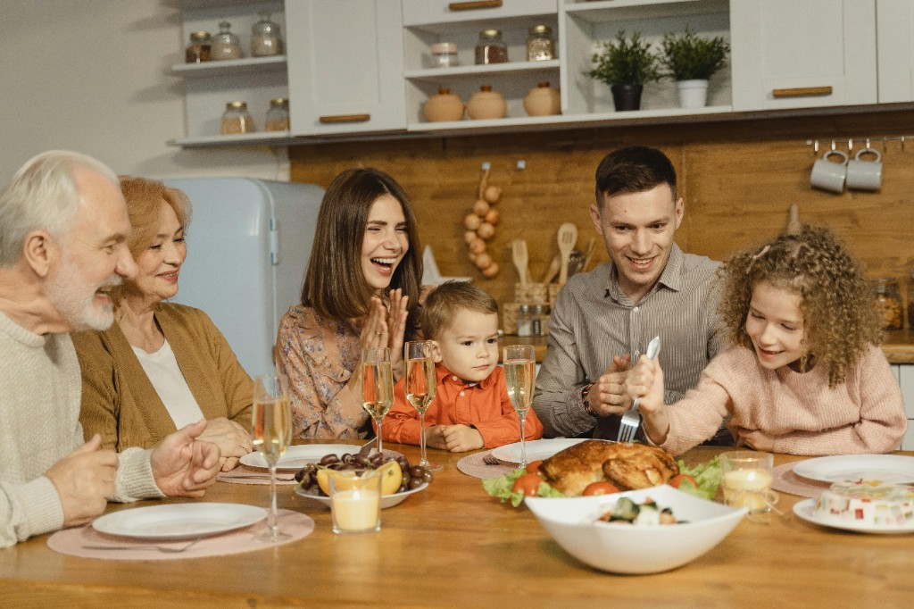

Age appropriate journey
Guidance that grows with your child through the teen years, so you are not left guessing when to start.
WHY BRIGHT TALKS
Bright Talks exists to help parents lead the conversations that matter most with greater clarity, confidence, and care. We offer practical, age appropriate guidance designed to help families start earlier, stay connected, and approach these conversations with intention instead of fear.
Our goal is not simply to give parents more information. It is to give them a clearer path forward, one rooted in trust, wisdom, and support for each stage of childhood.
WHAT MAKES US DIFFERENT
Guidance that grows with your child through the teen years, so you are not left guessing when to start.
Warm, clear dialogue that fits your relationship instead of a single awkward talk.
Lead early and on purpose, before outside messages or a crisis set the tone.
Biblical values and trusted research, so guidance feels spiritually grounded and practically sound.
Support you can return to as kids grow and new questions come up.

WHY WE BUILT BRIGHT TALKS
Bright Talks grew out of more than 25 years of work helping people break free from pornography use and related patterns. Through that work, we saw the long term impact of early exposure, silence, and poor formation during childhood and adolescence.
Over time, it became clear there were not enough practical, trustworthy tools for parents navigating sex education and related conversations at home. In partnership with experts who believe healthy, age appropriate education and family communication can reduce harmful outcomes, we built Bright Talks to help parents lead with wisdom before destructive patterns take root.
HOW WE BACK UP OUR CREDIBILITY
Bright Talks is informed by the people, principles, and research that matter most when helping families navigate difficult conversations well.
Developed with input from counselors, educators, and parenting experts who understand both family dynamics and child development.
Designed to support families who want guidance that reflects a thoughtful Christian worldview and a values driven approach to parenting.
Informed by research in child development, parent child communication, and behavior formation so parents can rely on more than opinion alone.
Built to help parents feel more prepared, more confident, and more equipped to build trust with their children over time.
WHAT DO THE EXPERTS SAY?
Bright Talks is led by practitioners who understand real family life. Heidi Cooper teaches our first course—helping parents start calm, age-right conversations from the earliest years.
Hi, I’m Heidi. I’ve spent years walking alongside parents who want to do this well—but feel unsure where to start when a child asks a body question at the dinner table or in the car.
I lead Foundations: Early Years, Bright Talks’ first course: short, warm lessons that give you practical language for everyday moments, not a lecture you have to get through in one sitting.
“Trust grows in the small answers. When you respond calmly to the little questions, your child learns they can come to you with the big ones.”
WHAT PEOPLE ARE SAYING
“It is a really difficult subject for parents, but saying ‘before the world does’ makes it completely clear that you need to have this conversation so they understand it in the Christian way.”
“Clear support for conversations you want to lead. I liked the flip cards with the bible verses.”